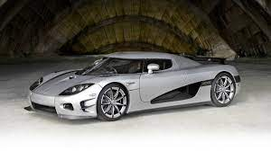

Koenigsegg
Koenigsegg CCX

Koenigsegg CCX (Competition Coupe X) adalah model
yang diperkenalkan pada tahun 2006 dan diproduksi hingga 2010. CCX
dirancang untuk memenuhi peraturan emisi di berbagai pasar global,
termasuk Amerika Serikat. Mobil ini dilengkapi dengan mesin V8 yang
menghasilkan antara 806 hingga 850 tenaga kuda. CCX memiliki desain
aerodinamis yang khas dan merupakan langkah penting dalam
perkembangan teknologi dan kinerja Koenigsegg,
menjadikannya salah satu model yang penting dalam sejarah
perusahaan.
Setiap model ini menunjukkan komitmen Koenigsegg terhadap inovasi,
kecepatan, dan performa tinggi.
Kelebihan
- CCX menggunakan sasis dan bodi serat karbon, memberikan struktur yang ringan namun sangat kuat, meningkatkan performa dan keselamatan.
- Dengan desain aerodinamis yang ramping dan pintu khas Koenigsegg, CCX tampil menonjol sebagai supercar yang ikonik dan menarik secara visual.
-
Ditenagai oleh mesin V8 twin-supercharged 4.7-liter, CCX
menghasilkan lebih dari 800 tenaga kuda, memastikan kecepatan dan
akselerasi yang mendebarkan, dengan kecepatan maksimum melebihi
245 mph (sekitar 395 km/jam).
Daftar Harga
| Series | Tentang | |
|---|---|---|
| Tahun | Harga | Koenigsegg CCX | 2022 | Rp 45.000.000.000 |